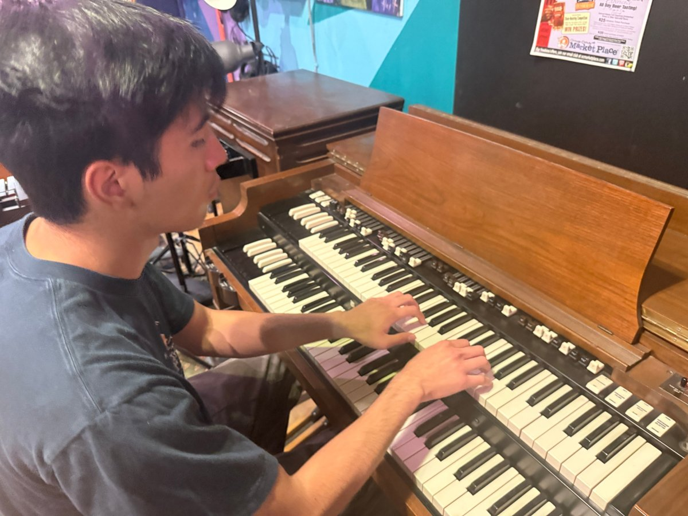
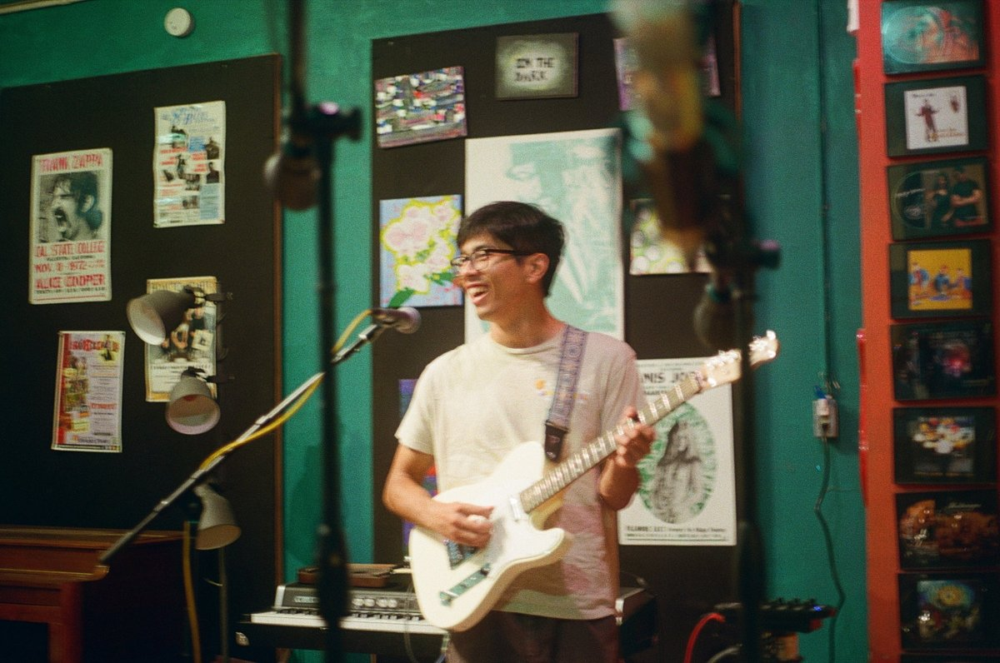
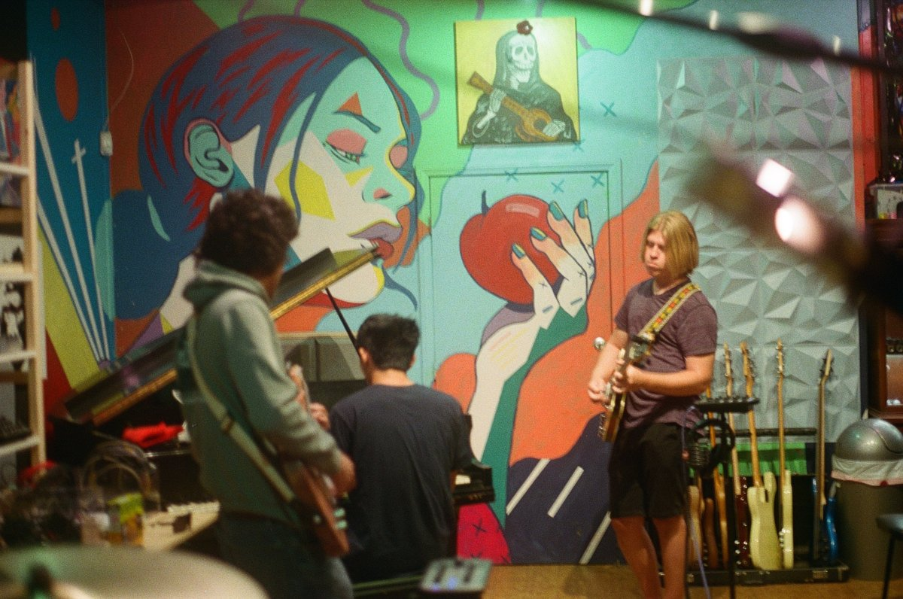

I play keyboard and guitar in Energetics. I also play Harmonium, and I'm trying to learn the Tabla. However my main love is the piano and it always will be. The composers that make me the most excited are Scriabin, Rautavaara, and Mahler, and I share the same love of Rachmaninoff that everyone does. To me, music has always felt less about self-expression and more about expression of something external and abstract.
Spotify Bandcamp YouTube Instagram



Current projects
Not really working on anything music related right now, still playing shows with Energetics. I am planning on transcribing “Feelings” as played by Nina Simone but I’m not sure when I’ll get around to it.